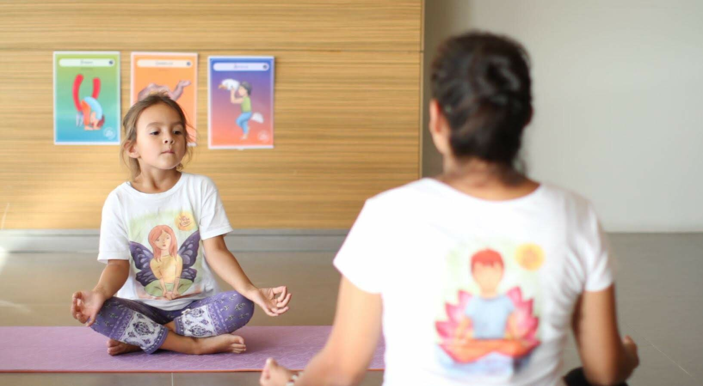

Podríamos escribir una larga lista de los beneficios que proporcionan las posturas en nuestros niños y niñas, pero resumiendo aquí van algunos de ellos:
- Proporcionan mayor flexibilidad y fuerza.
- Fortalecen sistema muscular.
- Permiten mantener una buena postura.
- Fomentan la coordinación.
- Mejoran la concentración.
- Aumentan la conciencia corporal y espacial, etc.
Estos beneficios aumentan al poder permanecer más tiempo en ellas, pero ¿cómo lo hacemos?.
Al momento de realizar posturas junto a los niños y niñas, es necesario mantener un lenguaje lúdico y acompañado de acciones concretas que permitan mantener la atención y también así permanecer más tiempo en cada asana.
Aquí van algunas ideas…
-
Tomar fotografías: Pueden imaginar que tú eres una fotógrafa profesional que capta los mejores momentos de sus asanas. Para esto puedes tener una cámara confeccionada especialmente para tu clase de yoga o puedes imaginarla.
-
Conteo con instrumento: Mediante un instrumento de percusión pueden contar juntos hasta un determinado número y para hacerlo más entretenido, puede ser primero de manera ascendente y luego descendente, también en diversos idiomas, con distintas velocidades, etc.
-
Jugando con el equilibrio: Puedes pedirles que equilibren objetos sobre sus cabezas, espaldas, brazos, piernas, etc. La idea es que les entregues la consigna que para lograrlo, necesitan respirar profundo y permanecer en la postura.
-
Datos Yogui: Puedes dar datos sobre las diversas asanas. Por ejemplo; si están efectuando la postura de la cobra, compartirles qué comen, cuántas horas duermen, aspectos de su piel, etc.
-
Usa elementos: Mientras realizan las posturas, puedes pasar con una tela, una pelota, una cuerda, una pluma, etc.
-
Las caricias: Llegó la hora de las caricias y eso significa que la yogui mayor acaricia a todos/as los participantes que están convertidos en una postura, luego el yogui o yoguina es otro/a para hacer la misma acción.